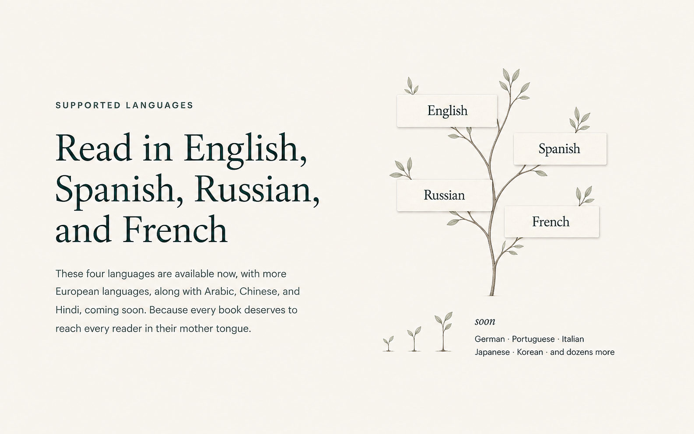
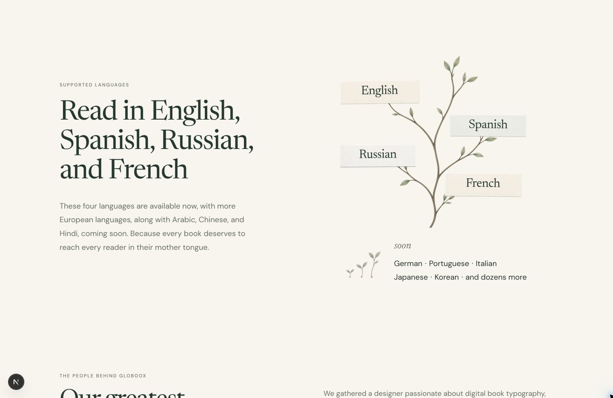

Language composition — 7 September
Source and rendered result use the same content and state. Source1586×992 is normalized to1440px page width. Browser capture1440×935CSS/pixels. Existing landing typography, container and real paper/tree assets are retained; generated source is the composition target. Crop/canvas differences are visible rather than concealed.
Amended ImageGen target
Actual implementation · 1440px
Detail · current cards and the quieter upcoming group
Source at normalized1440px widthBrowser pixels at1440px Before / after
Checkpoint0d22c81 · heavier upcoming-card group Current revision · upcoming names as two lines
Current revision · upcoming names as two lines